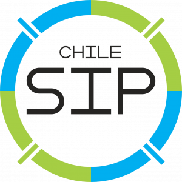
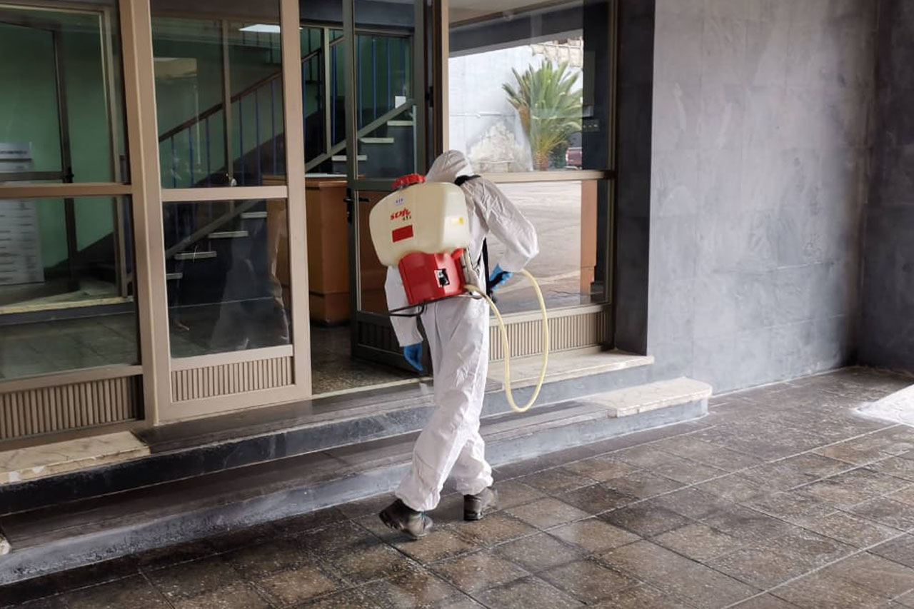
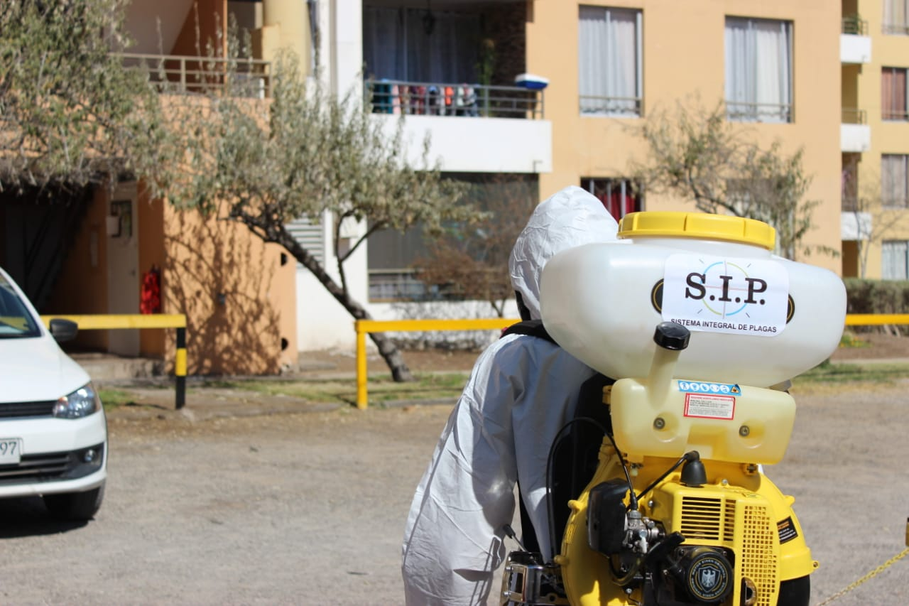

Empresa antofagastina presente en toda la región de Antofagasta. Por ti no descansamos: pregunta por nuestros servicios.


Operamos en toda la Segunda Región de Antofagasta.
Manuel Antonio Matta 3037, Antofagastacontacto@chilesip.cl